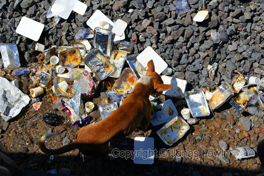
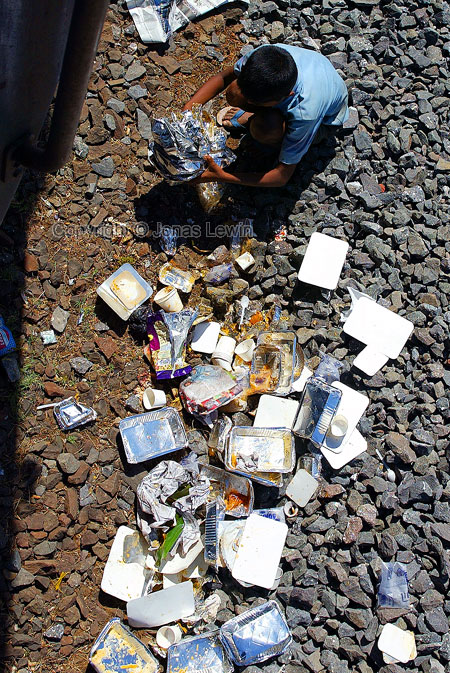
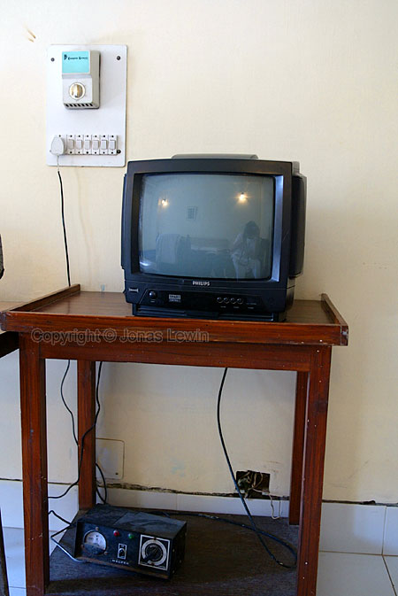
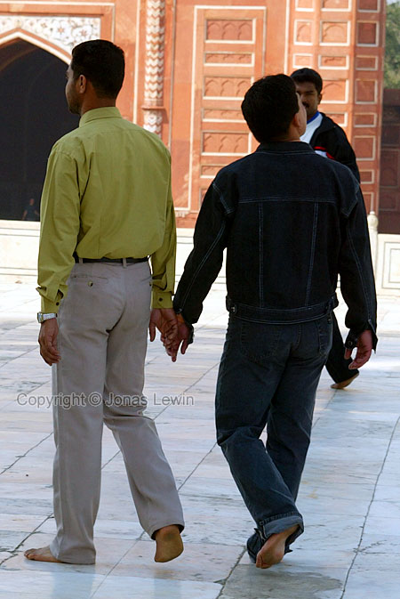
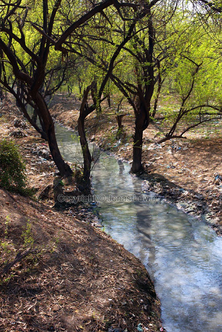
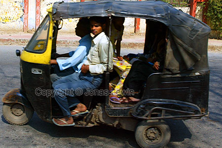
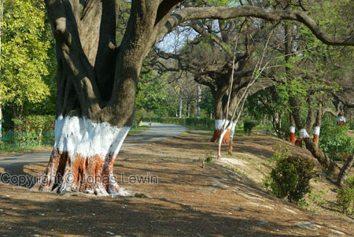
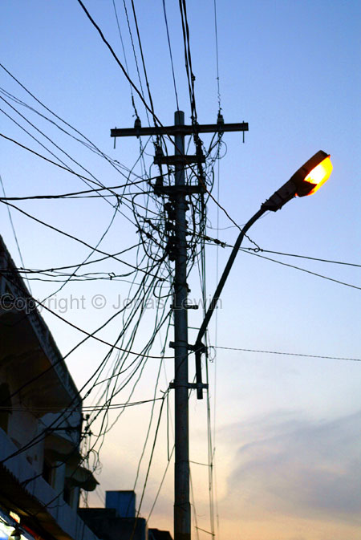
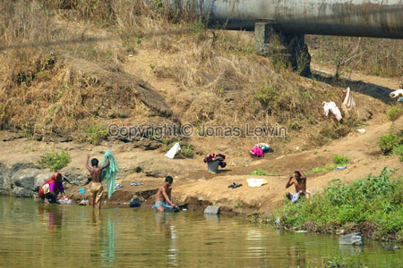
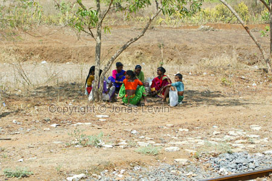

India has a very strange recycling system.
First we eat our lunch or dinner (with the fingers). Then they collect the
trays (along with everything on it) again.
When that is done, they remove the serving tray, and throw everything else
out the door. Paper, plastic, aluminum, food.
A few seconds later, the first dog arrive, and start feeding. A minute
later, there are a few dogs, and they fight over the food.
After
the dogs have eaten what they can, a boy show up. He is collecting the
aluminum, in which we had our lunch, sauce and more. My guess is that he
then can sell it for a few rupees per kilo.
But nobody picks up the plastic or the paper. That's why India looks like a big dump.
So India has some sort of recycling system, but not the most effective.
If only the boy could get some rupees for the plastic and paper as well, then India would probably be a lot cleaner (at least look cleaner) than today.
Here's a recording of the noise in the train. This is the noise level of the most expensive class. The common class has a different noise...
The person selling coffee also has a strange sound. He always repeats
himself. Even when standing still and pouring the coffee to someone, he
never stops. Also when giving change, or getting money, this is all he ever
says. Never thank you or any other word. Just
Coffi-Coffi-Coffi.
At
this hotel, we even got a TV.
What is funny about this, is how It's connected. The cable goes from the socket in the wall, to a Voltage regulator at the bottom. And from that to the TV.
I guess that it's connected to this, to remove the constant power spikes
that India has. The TV would probably not liver very long without it. But as
we didn't select an expensive room, there was no UPS, to accompany the
Voltage regulator.
And
the goal of the 2600 km (36 hours) long train ride from Goa to Agra: Taj
Mahal.
I just had to take this classic view of the Taj Mahal.
And
they where repairing the Taj on many places at the same time.
 The
Taj is quite large, and it looks better on photo than in reality.
The
Taj is quite large, and it looks better on photo than in reality.
There are 2 different entry fees to the Taj. 150 rupees for Indians, and 750 for foreigners.
As they have "adapted" to tourism, why does the locals behave as we where the first tourists that they have ever seen.
We tried to find something that resembles the average Agra person.
The closest resemblance is: if you mix a bad/naughty kid, and a monkey, this
is very close.
I have never had to degrade a person to the intelligence/social competence
to a kid before, but in this case, it was not enough. You had to degrade
even further. I don't like it, but in my mind, it's the closest I can come
up with.
After spending 4 hours at the Taj, it was time to think about returning to
Goa.
Was it worth 2 x 36h train for 4 hours of Taj. I guess so. Because there was
not much for us to do in Goa.
Another
very strange habit that the Indian men have, are that they are holding hands.
Just like some small kids do here in Sweden, the Indian men are holding
hands to show their friendship. Another proof that Indians are more like
kids than grownups.
A very high percentage of the men also has a mustache. My guess is that they
all think that it looks really good.
After
leaving the Taj, we where walking around in the city. Bad Idea, but we
didn't know any way else to spend the time. As soon as we went out of the
Taj, the extreme staring started again. And everywhere we went, Everyone was
shouting "hello, hello, hello". And the best thing we could do was to
completely ignore everyone. It's very hard to do, as you always have around
20-200 pair of eyes focused on you, where ever you go.
A kid on a bike also tried to steal my coca cola from my hands. He was
cycling towards me, and reached out his hand to try to grab it. Fortunately
he was coming from front, and he was staring at my coca cola. So I had no
trouble seeing what he was going to do, a few seconds before he reached me.
I grabbed the coke with both hands, and he was so busy staring at the coke,
that he didn't notice that I saw him.
When he grabbed his hand around the coke, I grabbed his hand, and yanked it.
As he was cycling, he didn't manage to keep the bike straight. In some
miraculous way he didn't fall and hurt himself. Instead the bike fell, and
he landed on his feet. Scared he ran very fast away from there, leaving his
bike.
After that incident, we walked out to less populated areas for a while.
Then we found this.
Grey river. Not brown, nor clear. Grey like full of cement. And anyhow the
leaves on the trees were very green. It seems that nature is colorblind, and
will use any water it can :-)
Everywhere
in India, you find these "moped taxis". The driver is supposed to sit in
front, and 2 passengers in the back.
The driver has 2 rear view mirrors, but they are not used for looking at the
traffic. They are used to look at the customers, when he is talking.
But as many people in India are quite poor, they always use every resource
to the max. Here 6 people are using the taxi, and that was a quite common
sight. 5-7 was the normal amount of passengers that these taxis had, when
they where not driving non-Indian tourists.
The
red and white markings are there for two reasons. The markings contain
substance to keep away insects from harming the trees. And the contrast
color make them easier to see when it's dark.
The last argument I would understand if this was a road where people could
drive with cars, but this road is only for cycling and walking.
Another
beautiful picture of the sunset. And along with that, the proof again of
Indian ingenuity.
While we where in the train, we also saw some great wiring. Several normal (like this) poles connected to each other in a long row. But at one end, all the wires where just hanging. Not connected to anything. I was searching for another pole in the extended imaginary line in the direction the other poles lead. But I could not find any pole. So the wires had not been cut off by any falling tree (there where no trees within 100m of any of the poles). The wires had just ended there. For no apparent reason.
In Agra I also saw the most disgusting thing I have ever seen in my life:
The public toilets in Agra consists of 3 walls, and a hole. And under the
toilets, and along the street, there was a channel. In this channel, some
viscous fluid was running, of human excrement.
This is all well, as they had some form of sewage system. But! This worked
only well, until we reached the point where the street was not sloping. At
that point, all of what was in the channel was creating a small lake. And in
this lake, some pigs where walking/wading.
I'm glad that I'm not a pig, and I'm glad that I'm not living in india.
When
going back to Goa with the train, I saw many people washing clothes and
bathing. But this was the only time I actually saw men presumably washing
clothes. Otherwise it was only the colorful women that where doing all the
washing. The men where just bathing. And occasionally the men would also be
fishing.
Colorful
women resting in the shadow of a tree. Surrounded by garbage of paper and
plastic.
Before sitting down, I observed one lady finding a large enough piece of
plastic. Then she tried to make it somewhat clean, and used it to sit on.